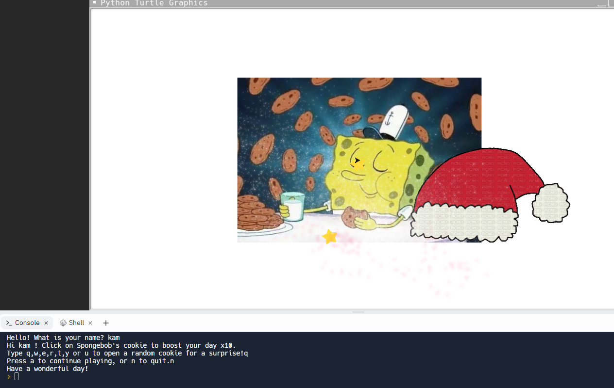
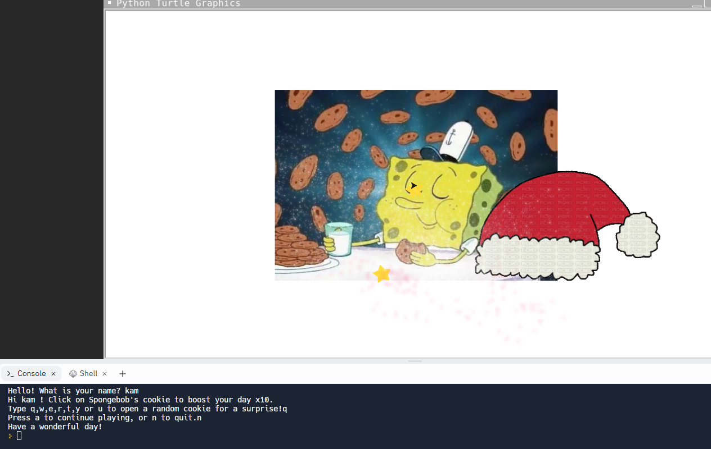

You start off with choosing what type of sauce you want for your pizza (buffalo, BBQ, or marinara), then you are able to choose up to three toppings by typing in their respective numbers:
Once you have selected your toppings, your pizza is generated and delivered to you! For example, let's say you chose your toppings to be pepperoni, onions, and mushrooms.
Then finally, your pizza is delivered!
Rock, Paper, Scissors Game:
This is the rock, paper, scissors game by Kam, Kyle, and Lucas. The game starts by giving you three options: press 1 for rock, 2 for paper, or 3 for scissors. If it's a
draw, your score will not be affected. If you lose or win, your score will be updated.
You have the option to continue playing after every round by pressing y, if you wish to quit, you can press q. That is all. Thanks.
Spongebob Cookies E-Card:
This is the starting view of the card, you can enter your name to begin.

Now, you can click on the cookie that spongebob is holding in order to "boost your day by 10x!"
After you click the cookie and boost your day, you can choose from a variety of provided keys to click on to randomly generate a surprise image.
You can click "a" to restart, or n to quit the e-card.

This is the starting view of the card, you can enter your name to begin.
Now, you can click on the cookie that spongebob is holding in order to "boost your day by 10x!"
After you click the cookie and boost your day, you can choose from a variety of provided keys to click on to randomly generate a surprise image.
You can click "a" to restart, or n to quit the e-card.
